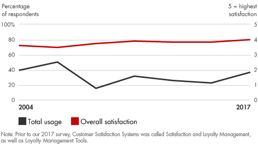
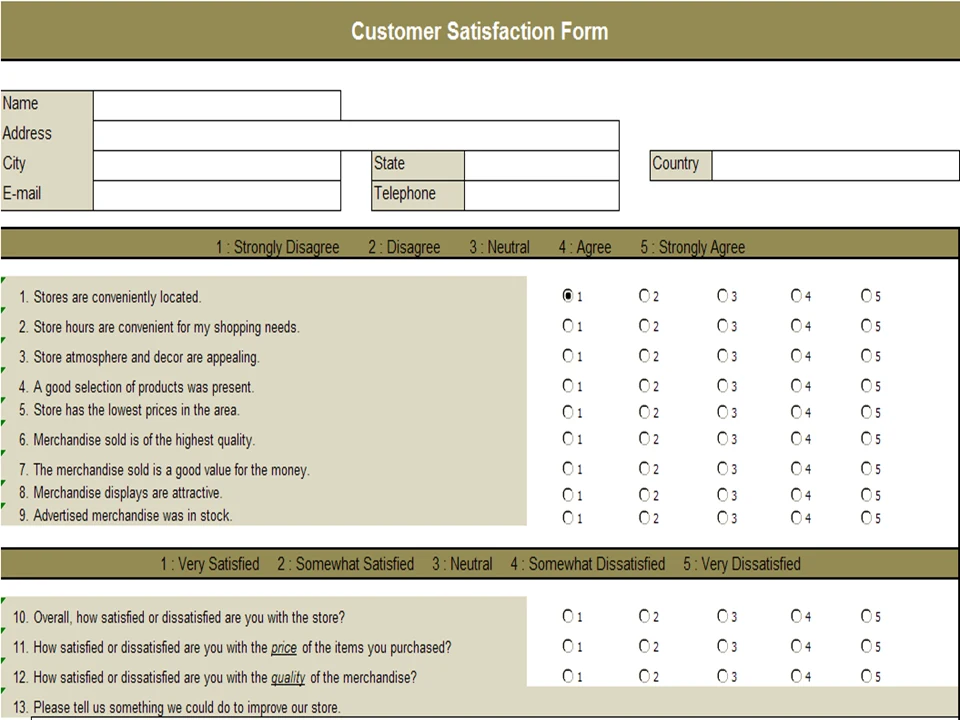

📘معرفی ابزار
سامانههای رضایت مشتریان از طریق بهبود نگهداشت مشتریان، کارمندان و سرمایه گذاران، درآمد و سود کسبوکار را افزایش میدهند. برنامههای وفاداری، میزان وفاداری هر یک از این گروهها را اندازهگیری و پیگیری میکنند و دلایل ریشهای عدم رضایت و فرار آنها را تشخیص داده و راهکارهایی را که نه تنها برای تقویت وفاداری، بلکه برای تبدیل کردن آنها به طرفداران شرکت مناسب است ایجاد میکنند. سیستمهای رضایت مشتری بصورت کمی نتایج مالی را به تغییرات در نرخهای بقای مشتری پیوند میدهند، با این رویکرد که حتی تغییرات کوچک در افزایش رضایت مشتری میتواند تاثیرات قابلتوجهی در عملکرد شرکت و رشد سود داشته باشد.
🆕بهروزرسانی ۱۴۰۵
این بخش در نسخهٔ آنلاین ۱۴۰۵ افزوده شده است. متن اصلی کتاب (آبان ۱۳۹۹) در بخشهای بعد بدون تغییر آمده است.
آمار و شواهد تازه
- شاخص ملی رضایت مشتری آمریکا (ACSI) در سهماههٔ چهارم ۲۰۲۵ روی ۷۶٫۹ ماند و سالانه ۰٫۵٪ کاهش داشت؛ ACSI میگوید از ۲۰۱۷ بهطور معنادار بالا نرفته است. (منبع: ACSI)
- ACSI در ۲۰۲۶ برای نخستین بار رضایت کاربران از پلتفرمهای هوش مصنوعی را سنجید: امتیاز کلی ۷۳ از ۱۰۰ (نمونهٔ ۲٬۷۱۱ بزرگسال آمریکایی). (منبع: ACSI)
چه چیزی تغییر کرده؟
سنجش رضایت اکنون باید تجربهٔ تعامل با خودکارسازی را هم در برگیرد و نباید به یک پرسشنامهٔ سالانه محدود شود. ترکیب شاخصهای رفتاری (ریزش، تکرار تماس) با نظرسنجی کوتاه پس از تعامل، تصویر دقیقتری میدهد.
نمونه ابزارها و نرمافزارهای امروزی
نامها صرفاً نمونهاند و توصیه یا تبلیغ تجاری نیستند؛ شرایط دسترسی و تحریمها را برای سازمان خود بررسی کنید.
منابع این بخش
🧩فرآیند اجرا
- به طور منظم میزان وفاداری جاری را از طریق نظرسنجی و دادههای رفتاری ارزیابی میکند. موثرترین رویکردها، رضایت صرف از وفاداری واقعی را تشخیص میدهند. آنها از مشتریان فعلی سوال میکنند که چقدر احتمال دارد که این شرکت را به یکی از دوستان یا همکار خود معرفی کنند و همچنین از کارکنان خط مقدم بپرسند که آیا آنها باور دارند که سازمان سزاوار وفاداری آنها است یا خیر.
- میزان وفاداری فعلی در برابر آنهایی که رقیب هستند.
- چند بعد عملکردی را شناسایی کنید که بیشتر به مشتریان و کارمندان مهم است و آنها را به دقت پیگیری کنید.
- Systematically بازخورد نظرسنجی را در سراسر سازمان بیان میکنند.
- ایجاد وفاداری و حفظ اهداف در سیستمهای محرک، برنامهریزی و بودجهریزی شرکت.
- تهیه برنامههای جدید برای کاهش میزان برانگیختگی مشتری و کارمندان.
- بازبینی سیاستهایی که نتایج کوتاهمدت را با هزینه وفاداری بلند مدت، مانند هزینههای خدمات بالا و تخفیفهای ارایهشده تنها به مشتریان جدید، هدایت میکنند.
- دسترسی به سرمایه گذاران و تامین کنندگان برای یادگیری آنچه که وفاداری آنها را تحریک میکند.
💼موارد استفاده در کسبوکار
- ایجاد روابط پایدار با مشتریان که بیشترین سودآوری را دارند و سهم بزرگتری از کسبوکار را ایجاد میکنند.
- رشد فروش با افزایش مراجعات به مشتریان و کارمندان
- جذب و حفظ کارمندانی که مهارت، دانش و روابط آنها برای عملکرد برتر ضروری است
- بهبود بهرهوری و کاهش استخدام و هزینههای آموزش
- تنظیم راهبردی منافع و انرژی کارمندان، مشتریان، تامین کنندگان و سرمایه گذاران در یک چرخه مثبت
- بهبود عملکرد مالی بلندمدت و ارزش سهام
📈میزان محبوبیت در طی زمان

🧪نمونه ابزار / الگو

یکی از راحت ترین ابزارها برای نظرسنجی و آگاهی از نظرات دیگران درباره سازمان، استفاده از پرسشنامه و آن هم پرسشنامه آنلاین میباشد که برای مشتریان هم راحت تر است و هم به زمان کم تری برای پاسخگویی نیاز دارد. در این پرسشنامه ها سازمان ها با استفاده از سوالاتی درباره نحوه عملکرد سازمان در خصوص ارتباط با مشتری و ارائه محصولات، سطح رضایت مشتریان از سازمان و همچنین عملکرد سازمان از نگاه بیرونی را رصد میکنند و با استفاده از آن تمهیداتی برای عملکرد بهتر سازمان در نظر میگیرند.
⬇️چکلیست قابلدانلود
چکلیست اجرایی این ابزار را دانلود و در سازمان خود تکمیل کنید. گامها از فرآیند اجرای همین صفحه برداشته شدهاند و ستونهای مسئول، موعد و وضعیت برای پیگیری تیمی خالی گذاشته شده است.
⬇ دانلود چکلیست (Word) · سامانههای رضایت مشتریان📚مراجع مطالعه بیشتر
- Bain & Company, Customer Satisfaction Systems: bain.com/insights/management-tools-customer-satisfaction-systems
- Dixon, Matthew, Karen Freeman, and Nicholas Toman. “Stop Trying to Delight Your Customers.” Harvard Business Review, July/August 2010, pp. 116–122.
- Humby, Clive, Terry Hunt, and Tim Phillips. Scoring Points: How Tesco Continues to Win Customer Loyalty. 2d ed. Kogan Page, 2008.
- Kumar, V., J. Andrew Petersen, and Robert P. Leone. “How Valuable Is Word of Mouth?” Harvard Business Review, October 2007, pp. 139–146.
- Owen, Richard, and Laura L. Brooks. Answering the Ultimate Question: How Net Promoter Can Transform Your Business. Jossey-Bass, 2008.
- Pearson, Bryan. The Loyalty Leap. Portfolio Hardcover, 2012.
- Reichheld, Fred. Loyalty Rules: How Today’s Leaders Build Lasting Relationships. Harvard Business School Press, 2003.